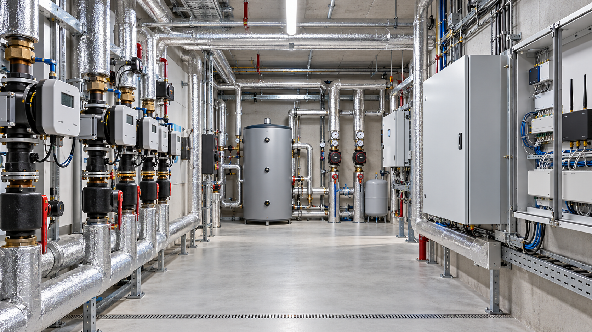

Línea 03 — Contabilización
Contabilización de energía.
Pantallas, centralitas, contadores MID, comunicaciones y servicios de auditoría y telegestión para instalaciones de calefacción centralizada.
La gama, categoría a categoría.
03 — Contabilización